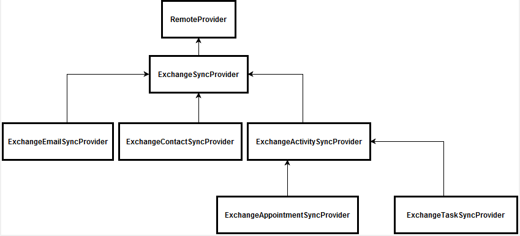

На базе механизма синхронизации Sync Engine в конфигурации реализована интеграция с различными сущностями MS Exchange по протоколу EWS (Exchange Web Services).
Синхронизация задач с MS Exchange
Алгоритм синхронизации задач происходит в три этапа:
- Получение изменений из MS Exchange, их применение;
- Получение изменений из Creatio, их применение;
- Создание новых задач из Creatio в MS Exchange.
Реализация интеграции
Как описано в статье, для того, чтобы реализовать интеграцию с использованием данного механизма, необходим класс, реализующий логику работы с внешним хранилищем (наследник RemoteProvider. Вся иерархия классов провайдера изображена на рисунке. Также необходим класс, реализующий интерфейс IRemoteItem, который представляет один экземпляр элемента синхронизации (в данном случае — задачу MS Exchange). Вся иерархия RemoteItem изображена на рисунке.

Класс ExchangeTaskSyncProvider является провайдером для работы с внешним хранилищем MS Exchange, в нем реализована логика по выбору данных и сохранению изменений в Creatio и MS Exchange. Класс ExchangeTask реализует интерфейс IRemoteItem. В нем реализована логика заполнения данных в соответствующих системах.
Синхронизируемые данные
Соответствие объектов Creatio и полей класса ExchangeTask отображено в таблице.
| Объект Creatio | Поле объекта | Поле ExchangeTask |
|---|---|---|
| Activity | Title | Subject |
| StartDate | StartDate | |
| DueDate | CompleteDate или DueDate в зависимости от того, завершена задача или нет. | |
| Priority | Importance | |
| Status | Status | |
| RemindToOwner | IsRemindSet | |
| RemindToOwnerDate | ReminderDueBy | |
| Notes | Body.Text |
Логика выбора данных для синхронизации
Для выбора изменений списка задач из отобранных для синхронизации папок MS Exchange используются следующие условия: выбрать задачи MS Exchange, которые были изменены после даты последней синхронизации задач, или задачу MS Exchange, которая не была отмечена, как ранее синхронизированная. Для задач MS Exchange, которые были изменены, находятся соответствующие активности в Creatio. Актуальные изменения применяются в соответствующей системе.
При выборе измененных активностей Creatio выбираются активности:
- имеющие запись в метаданных синхронизации как задача MS Exchange;
- автором которых является текущий пользователь;
- дата последнего изменения которых больше чем дата последней синхронизации.
При выборе новых активностей Creatio, устанавливается набор общих фильтров и фильтры, настраиваемые пользователем. Основными фильтрами являются:
- Тип активности не равен "email".
- У активности не установлен признак Отображать в расписании.
Пользователь может указать группы активностей, которые будут экспортироваться из Creatio.
Заполнение полей Дата начала, Дата завершения (опиционально)
В объекте ExchangeTask есть несколько особенностей при работе с датами начала и завершения:
- В этих полях хранятся значения без времени. При изменении задачи в MS Exchange после синхронизации в Creatio применится дата из задачи MS Exchange, а время — из активности Creatio.
- Для даты завершения в ExchangeTask есть два поля — дата завершения (due date) и дата выполнения (complete date). В зависимости от статуса задачи, актуальной является одна из них — для не завершенных используется дата завершения, для завершенных дата выполнения. Дата выполнения устанавливается текущей датой, пока задача не будет завершена.
- Дата начала и дата завершения — поля, необязательные для заполнения в MS Exchange. Если какое-то из них не установлено, используется текущая дата. Из-за этого могут возникать конфликты, так как в Creatio и дата начала, и дата завершения обязательны для заполнения, и дата начала должна быть меньше даты завершения.
Синхронизация контактов с MS Exchange
Алгоритм синхронизации контактов происходит в три этапа:
- Получение изменений из MS Exchange, их применение;
- Получение изменений из Creatio, их применение;
- Создание новых контактов из Creatio в MS Exchange.
Реализация интеграции
Как описано в статье, для того, чтобы реализовать интеграцию с использованием данного механизма, необходим класс, реализующий логику работы с внешним хранилищем, — наследник RemoteProvider и класс, реализующий интерфейс IRemoteItem, который представляет один экземпляр элемента синхронизации (в данном случае — контакт MS Exchange).

Для синхронизации контактов также используются следующие классы:
- Класс ExchangeContactSyncProvider является провайдером для работы с внешним хранилищем MS Exchange, в нем реализована логика по выбору данных и сохранению изменений в Creatio и MS Exchange.
- Класс ExchangeContact реализует интерфейс IRemoteItem. В нем реализована логика заполнения данных в соответствующих системах.
- Класс ExchangeAddressDetailsSynchronizer содержит утилитные методы для преобразования данных об адресах контактов.
- Класс ExchangeEmailAddressDetailsSynchronizer содержит утилитные методы для преобразования данных об email-адресах контактов.
- Класс ExchangePhoneNumbersDetailsSynchronizer содержит утилитные методы для преобразования данных о телефонах контактов.
Логика заполнения деталей вынесена в отдельные классы, так как существуют значительные отличия в форматах хранения данных в Creatio и MS Exchange, и требуется дополнительное преобразование.
Синхронизируемые данные
Соответствие объектов Creatio и полей класса Contact MS Exchange отображено в таблице.
| Объект Creatio | Поле объекта | Поле класса Contact MS Exchange |
|---|---|---|
| Contact | Name | DisplayName |
| Surname | Surname | |
| GivenName | GivenName | |
| MiddleName | MiddleName | |
| Account | CompanyName | |
| JobTitle | JobTitle | |
| Department | Department | |
| BirthDate | Birthday | |
| SalutationType | TitleTag | |
| Gender | GenderTag | |
| ContactCommunication | Number | Значение в коллекции PhoneNumbers |
| CommunitactionType | Ключ для значения в коллекции PhoneNumbers | |
| ContactAddresses | City | Поле City элемента коллекции PhysicalAddresses |
| Country | Поле CountryOrRegion элемента коллекции PhysicalAddresses | |
| Region | Поле State элемента коллекции PhysicalAddresses | |
| Address | Поле Street элемента коллекции PhysicalAddresses | |
| Zip | Поле PostalCode элемента коллекции PhysicalAddresses | |
| AddressType | Ключ для значения в коллекции PhysicalAddresses |
Соответствие типов средств связи представлено в таблице.
| Тип средства связи Creatio | Тип средства связи MS Exchange |
|---|---|
| EmailAddress1, EmailAddress2, EmailAddress3 | |
| WorkPhone | BusinessPhone, BusinessPhone2 |
| HomePhone | HomePhone |
| MobilePhone | MobilePhone |
Соответствие типов адресов представлено в таблице.
| Тип адреса Creatio | Тип адреса MS Exchange |
|---|---|
| HomeAddress | Home |
| BusinessAddress | Business |
Логика выбора данных для синхронизации
Для выбора изменений в списке контактов из отобранных для синхронизации папок MS Exchange используется следующий набор фильтров: выбирается контакт MS Exchange, который был изменен после даты последней синхронизации контактов, или контакт MS Exchange, который не был отмечен, как ранее синхронизированный. Для контактов, которые были изменены, находится соответствующий контакт в Creatio. Самые актуальные изменения применяются в соответствующей системе.
При выборе измененных контактов Creatio выбираются контакты:
- автором которых является текущий пользователь;
- дата последнего изменения которых больше чем дата последней синхронизации;
- контакт не использовался в первом этапе синхронизации.
На правила выбора новых контактов Creatio, помимо стандартного фильтра по автору и фильтра отсутствия метаданных синхронизации, влияют пользовательские настройки. Доступно три варианта настройки:
- Синхронизировать контакты сотрудников. При выборе этой настройки к запросу будет добавлен фильтр по колонке [Тип контакта], и синхронизированы будут те контакты, у которых указан тип "Сотрудник".
- Синхронизировать контакты клиентов. При выборе этой настройки к запросу будет добавлен фильтр по колонке [Тип контакта], и синхронизированы будут те контакты, у которых указан тип "Клиент".
- Синхронизировать контакты из определенных групп. При выборе этой настройки к запросу будут добавлены фильтры выбранных групп контактов.
Дополнительные возможности
Возможность использовать расширенные ключи для контактов во внешнем хранилище
Ввиду особенностей работы MS Exchange возможна ситуация, когда при большом количестве контактов MS Exchange часть из них получит одинаковые идентификаторы, и, как следствие, синхронизация может некорректно определить соответствующий контакт в Creatio. Для обхода подобной ситуации реализована функциональность расширенных внешних ключей, которую можно включить при помощи настройки Использовать комбинированные идентификаторы для синхронизируемых контактов MS Exchange. Код настройки — UseComplexExchangeContactId. После ее включения может понадобиться повторная синхронизация.
Синхронизация встреч с MS Exchange
Синхронизация встреч Creatio происходит только для новых активностей или при изменении полей Title, Location, StartDate, DueDate, Priority, Notes. По этим полям формируется хэш, который хранится в дополнительных параметрах метаданных (в поле ExtraParameters). Если встреча была изменена в Creatio, и хэш из ExtraParameters не совпадает с новым хэшем, то эта встреча должна быть синхронизирована.
Алгоритм синхронизации встреч происходит в три этапа:
- Получение изменений из MS Exchange, их применение;
- Получение изменений из Creatio, их применение;
- Создание новых встреч из Creatio в MS Exchange.
Реализация интеграции
Как описано в статье, для того чтобы реализовать интеграцию с использованием данного механизма, необходим класс, реализующий логику работы с внешним хранилищем, — наследник RemoteProvider, и класс, реализующий интерфейс IRemoteItem, который представляет один экземпляр элемента синхронизации (в даном случае — встречу MS Exchange).

Класс ExchangeAppointmentSyncProvider является провайдером для работы с внешним хранилищем Exchange. В нем реализована логика по выбору данных и сохранению изменений в Creatio и Exchange.
Класс ExchangeAppointment реализует интерфейс IRemoteItem, и в нем реализована логика заполнения данных в соответствующих системах.
Синхронизируемые данные
Соответствие объектов Creatio и полей класса ExchangeAppointment отображено в таблице.
| Объект Creatio | Поле объекта | Соответствующее поле MS Exchange Appointment |
|---|---|---|
| Activity | Title | Subject |
| Location | Location | |
| StartDate | StartDate | |
| DueDate | CompleteDate или DueDate в зависимости от того, завершена встреча или нет. | |
| Priority | Importance | |
| Status |
Заполняется по алгоритму: Если статус не указан и дата окончания больше, чем текущая, — статус в Creatio устанавливается как "Новая встреча". Если дата окончания меньше, чем текущая дата, — статус устанавливается как закрытая встреча со статусом "Информация получена". |
|
| RemindToOwner | IsReminderSet | |
| RemindToOwnerDate | ReminderDueBy | |
| Notes | Body.Text | |
| ActivityParticipant | InviteResponse | Если в MS Exchange установлен признак, что встреча принята или пользователь является организатором встречи, то в Creatio устанавливается признак "Встреча подтверждена". В противном случае устанавливается признак того, что встреча отменена. |
Логика выбора данных для синхронизации
Для выбора изменений в списке встреч из отобранных для синхронизации папок MS Exchange используется следующий набор фильтров: выбираются встречи MS Exchange, которые были изменены после даты последней синхронизации встреч, или встречи MS Exchange, которые не были отмечены, как ранее синхронизированные. Для встреч, которые были изменены, находятся соответствующие активности в Creatio. Самые актуальные изменения применяются в соответствующей системе.
При выборе измененных активностей Creatio выбираются активности:
- которые имеют запись в метаданных синхронизации как встречи MS Exchange по RemoteId (определяется уникальным идентификатором встречи в календаре ICalId);
- дата последнего изменения которых больше, чем дата последней синхронизации;
- одна встреча в Creatio соответствует нескольким встречам в MS Exchange для каждого участника.
При выборе новых активностей Creatio устанавливается набор общих фильтров и фильтры, настраиваемые пользователем. Основными фильтрами являются:
- Тип активности не равен "Email".
- У активности установлен признак Отображать в расписании.
Пользователь может указать группы активностей, которые будут экспортироваться из Creatio.
Логика выбора участников встречи
При синхронизации активности из MS Exchange в Creatio на деталь Участники добавляются те контакты, у которых на детали Средства связи есть email из списка учасников встречи в MS Exchange.
При синхронизации активностей из Creatio в MS Exchange участники встречи для MS Exchange заполняются основными email-адресами контактов.